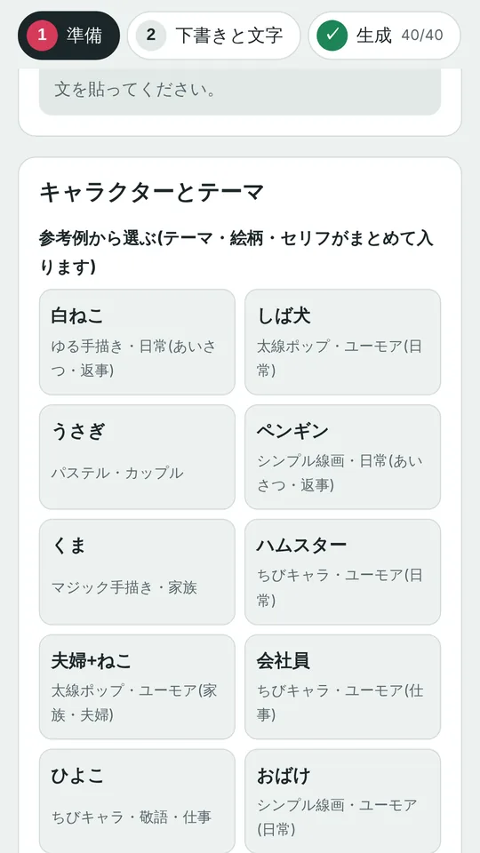
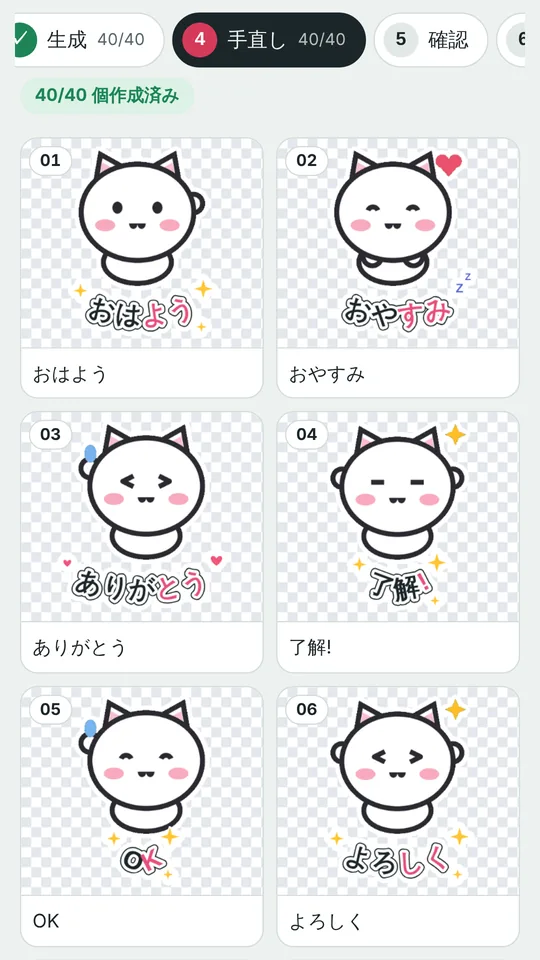
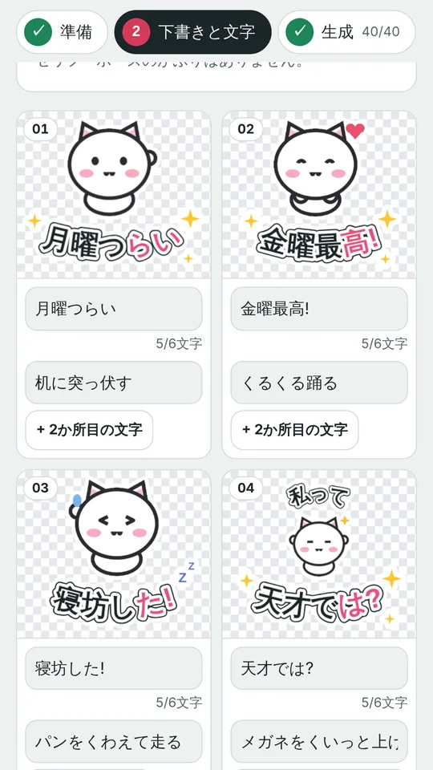
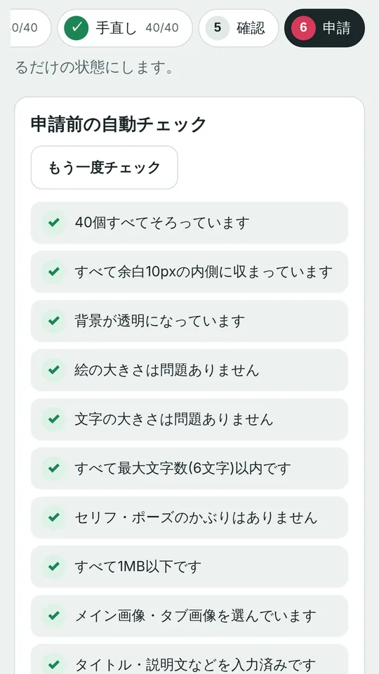

40個、ポーズもセリフも
かぶらないように
Gemini に貼る指示文を、8個ずつ5回ぶん作ります。Gemini アプリに貼るだけなので、API の登録や追加の料金はいりません。下の40個は、ツールで仕上げた見本です。押すと動きます。
できること

キャラとテーマを選ぶ
白ねこ・しば犬・会社員など10の見本から選ぶと、絵柄とセリフがまとめて入ります。自分で描いた絵や、自分の指示文でも作れます。

文字を曲げる、色を変える、飾る
フォント、9か所の位置、縦書き、カーブ、後半だけの色変え、キラキラやハートの飾り、スタンプ全体の白フチまで。文字の大きさは40個でそろいます。

セリフは見本から、1個ずつ直せる
ゆるい日常、職場のあるある、敬語、家族、季節など。気になる1個だけ書き換えたり、2か所目の小さい文字を足したりできます。

申請前のチェックと書き出し
余白・透明な背景・文字数・ファイルの大きさを自動で確かめて、LINE Creators Market に出せる形の ZIP にまとめます。タイトルや説明文の入力もここで。
使う流れ
- 指示文をコピーして、Gemini に貼る8個ずつの画像が5枚できます
- できた画像を取り込む40個に切り分けて、背景を自動で消します
- 文字を入れて、チェックして、ZIP で書き出すそのまま LINE Creators Market に申請できます
受け取り方
10/26(月)21:00〜23:59 の間だけ、フォロワー限定で配布します。
- Instagram の投稿に「スタンプ」とコメント@studio_kakuu の、スタンプ工房の紹介リールです。TikTok から来た方も、こちらでコメントしてください
- DM でオープンチャットの案内が届く「AIスタンプ作り部|スタンプ工房」の参加コードも DM に入っています
- 21:00 にオープンチャットで合言葉を発表先に参加コードで入って、21:00 を待っていてください
- ツールを開いて、合言葉を入れる一度入れれば、その端末ではそのまま使えます。無料です
使ってみた感想や、ほしい機能はオープンチャットで聞かせてください。次の改良に使います。